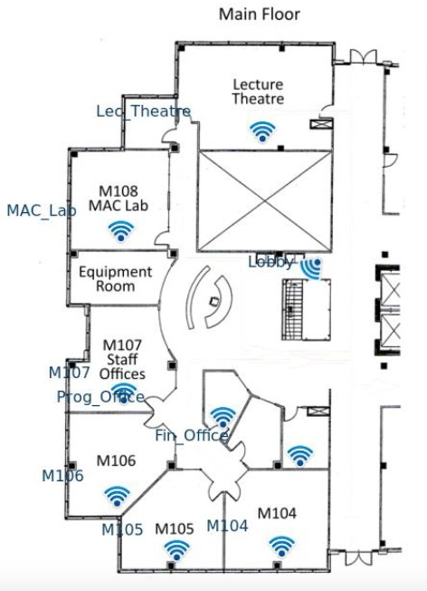

Acme Corp. is a company located on the 6th floor of the Landmark 2 building in Kelowna, BC. Acme has entered into a memorandum of understanding with the Centre for Arts and Technology, located in the Landmark 3 building, for the shared use of some of CAT’s facilities during night-time hours when the facilities are otherwise unused.
Acme has requested that you design the technology infrastructure required to connect Landmark 2 and Landmark 3 with a point-to-point WLAN connection, as well as provide WLAN coverage for CAT’s space on the ground floor of Landmark 3.
In order to demonstrate your design, you are required to provide mock-ups of certain aspects of your design as outlined. In addition to the mock-ups, you are required to provide a full planning document outlining the results of your research and details of your proposed solution.
1 Project Overview
1.1 Purpose of Document
The purpose of this document is to provide a secure, reliable, and cost effective solution for the Acme Corp Infrastructure Project. It details the physical and logical requirements and how to address those in the best manner possible.
1.2 Scope
Scope can be split into two parts; one being the establishment of a wireless point-to-point link between Landmark 3 and Landmark 2 buildings and the other creating a WLAN network at the CAT facility in Landmark 3 on the ground floor. However, the proposed solution was designed in such a way to address potential contingencies as they arise.
2 Equipment & Installation
2.1 Equipment / Pricing
| 2.1.1 | Two (2) MikroTik mANTBox 52 15s Units ( Antenna mounts included ) | $456.85 |
| 2.1.2 | Two (2) WC-44 Outdoor Enclosures | $211.38 |
| 2.1.3 | Two (2) Pole Mounting Assemblies | $100.93 |
| 2.1.4 | Two (2) Heavy Duty, High-speed Cat8 Ethernet Cables ( 150ft outdoor cables ) | $165.98 |
| 2.1.5 | One (1) UniFi EdgeSwitch 16XP | $425.00 |
| 2.1.6 | One (1) Netgate 3100 MAX pfSense+ Firewall | $442.00 |
| 2.1.7 | Nine (9) UniFi WiFi 6 Long-Range Access Points ( See Cabling ) | $1,611.00 |
| TOTAL | $3,413.14 |
Additional subcontractor Cat5 cabling charges may added.
URLs and Data Sheets for equipment are referenced in Appendix.
2.2 Installation
2.2.1 Point-to-point Connection – Antenna Mounting Locations
There are two buildings that sit between the target locations. The Ecco supply building is one of them but poses no threat of interference with the point-to-point link as it is only 2 storeys tall, which sits well below the height of the antenna installations. The Landmark 6 building is taller than both Landmark 2 & 3 buildings but doesn’t block the line of sight between them. However, Landmark 6 might encroach on the fresnel zone of the link if not properly placed. Therefore the antenna on Landmark 3 should be installed on the roof at the SE corner and the antenna on Landmark 2 should be installed on the roof at the NE corner. ( See Figure 1 )
2.2.2 Point-to-point Connection – Landmark 2
To connect services from the electrical room on the 3rd floor to the roof will require a minimum of 37m of Cat8 ethernet cable. A 150ft cable is suggested for this solution to give some extra leway. The pole mount will need to be installed on the NE corner of the roof. The enclosure that is included with the antenna/base station does not have a sufficient rating for the weather conditions experienced year round in Kelowna. Therefore, they should be held in a WC-44 enclosure that is included in this solution. Included with the antenna/base station is one (1) Gigabit PoE injector cable with shielded connector. If there is no PoE device in the electrical room to connect to the base station then the PoE injector cable can be used in conjuction with a 50ft extension cord to reach a power supply located on the roof. Attach grounding wire to the grounding screw, then attach the other end of the grounding wire to the grounded mast. The antenna must be installed at an downtilt angle of 7.7244° degrees based on calculations below. ( See Figure 2 )
Downtilt Ang = tan-1 [(Landmark 2 Hgt + Ant. Hgt) - (Landmark 3 Hgt + Ant. Hgt)]/Distance
7.7244° deg = tan-1 [(50m + 2m) - (30m + 2m) / 145.45m]
2.2.3 Point-to-point Connection – Landmark 3
To connect services from the meet-me room on the basement floor to the roof will require a minimum of 35m of Cat8 ethernet cable. A 150ft cable is suggested for this solution to give some extra leway. The pole mount will need to be installed on the SE corner of the roof. It is suggested that one (1) PoE UniFi EdgeSwitch 16XP be installed in the wiring closet of the basement and this will serve as both a power source and data connection for the base station. During installation the base station should be connected to ethernet port 1 on the switch. Attach grounding wire to the grounding screw, then attach the other end of the grounding wire to the grounded mast. The antenna must be installed at an uptilt angle of -7.7244° degrees based on calculations below. ( See Figure 2 )
Uptilt Ang = tan-1 [(Landmark 3 Hgt + Ant. Hgt) - (Landmark 2 Hgt + Ant. Hgt)]/Distance
-7.7244° deg = tan-1 [(30m + 2m) - (50m + 2m) / 145.45m]
2.2.4 WLAN Network
WiFi coverage is needed on the ground floor of CAT facilities in the Landmark 3 building. Nine (9) UniFi WiFi 6 Long-Range Access Points mounted on the ceiling at the locations depicted in Figure 3 will provide superior coverage of the space. Each access point should be connected to the PoE switch located in the wiring closet with Cat5 cables. The access points should be connected to the switch starting from ethernet port 2 to ethernet port 10. The Netgate firewall device should be located in the wiring closet with the switch and connected to port 16 on the switch, leaving five (5) ports available for future additions if need be. For further discussion of access point configurations and coverage reference Section 3, items 3.2.2 and 3.2.3 of this document.

3 Network Overview
3.1 Network Topology
3.2 Proposed Network Configuration
Proposed layer 2 and layer 3 network topology depicted in Figure 4 demonstrates room for possible future contingencies. In the suggested solution, essential elements to be configured are three (3) VLANs with VLAN 10 being used for management, VLAN 20 for ACME staff access, and VLAN 100 for the point-to-point connection. The subnets assigned to these VLANs are detailed in Figure 4. All ports should be configured as trunk ports to allow management and staff VLANs the ability to reach ACME’s ISP in Landmark 2 directly. VLAN 100 network addresses should be assigned to an interface on the firewall in Landmark 3 and whatever device is used to manage traffic in Landmark 2. The Firewall device should be configured to manage/route VLAN traffic. If, in the future, ACME comes into an agreement with CAT to allow CAT staff to use the WLAN network then VLAN 30 can be activated and configured with the subnet provided in Figure 4. If this contigency is used then the Firewall device should be configured to route VLAN 30 traffic through the ACME point-to-point subnet.
3.2.1 Point-To-Point Configuration
The antenna/base station units should be set to auto-modulate to ensure that the highest possible data rates are achieved. In addition, ensuring that the signal is transmitted on 5 Ghz band will result in the fastest, most reliable connection. As per Figure 6, as long as the signal received is higher than -72dBm the connection will run at the highest data rates supported by the base units. As referenced in the link budget in Figure 5, the transmit power should be set for 23dBm resulting in a receiving signal of -43.79dBm which is significantly higher than the minimum -72dBm needed. Finally the units should be configured to a dynamic power transmit setting so as to compensate for weather fluctuations that may interfere with the connection.
3.2.2 Access Point Configuration
All access points should be configured so as not to broadcast VLAN 10’s network SSID “Management”. However, it is advisable for all access points to broadcast VLAN 20’s network SSID “Staff” to allow easier access for users trying to connect. All access points should enable automatic channel selection and be set to transmit in both 2.4 Ghz and 5 Ghz bands. Each access point should be configured to transmit at a power of 12dBm for the 2.4Ghz band and 23dBm for the 5Ghz band as shown in Figure 7. Transmitting at these proposed levels will ensure all devices on premises will receive no lower than a -50dBm signal. The heat maps in @heat-maps illustrate signal strength at a -50dBm threshold. ( See Figure 8 )
3.2.3 Heat Maps
3.2.4 Firewall Configuration
A DHCP server should be configured to assign IP addresses to clients connecting to the access points. It would be recommend to enable the adblocking and website blocking features to protect the users and the network. If the VLAN 30 network is employed then the firewall should be configured to route traffic from VLAN 30 through VLAN 100 to reach services at ACME in Landmark 2. VPN features are available and may be taken advantage. Finally, it is highly recommended to enable/configure the intrusion prevension system (IPS) as this will provide an invaluable layer of security to the network.
3.2.5 Management IP Address Distribution
It is suggested to assign the management devices in this solution the IP addresses shown in Figure 9. Figure 9 can easily be referenced when there is a need to access a specific device from a web browser.
4 Security
4.1 Proposed Security Configuration
- Use longer more complex passwords for wireless networks
- Separate management access from general user access by creating a management VLAN
- Don’t broadcast the SSID for the management VLAN
- Enable WPA2 and WPA3 protocols on the network and disable all other security protocols
- Only allow the specific MAC addresses of installed access points to connect to network to deter rogue AP attacks
- Configure the RF signal strength of access points in such a way that the network can only be reached and connected to inside the immediate premises. ( See Figure 6 )
- Set access points to isolate clients
- Enable automatic security updates for all devices
- Enable IPS on the firewall
Appendix
References
MikroTik “mANTBox 52 15s
WC-44 Outdoor Enclosure with Clear Cover
Pole Mounting Assembly
https://wilsonamplifiers.ca/pole-mounting-assembly-for-outdoor-antennas-10-inch-901117/
150ft Cat8 Heavy Duty High-speed Cable
https://www.amazon.ca/Ethernet-Shielded-Lastest-2000Mhz-Weatherproof/dp/B087N2BBF6
UniFi EdgeSwitch 16XP
https://store.ui.com/collections/operator-edgemax-switches/products/es-16xp
Netgate 3100 MAX pfSense+ Security Gateway
https://shop.netgate.com/products/3100-max-pfsense?variant=32156745531507
UniFi Access Point WiFi 6 Long-Range
https://store.ui.com/products/unifi-6-long-range-access-point_pos=20&_sid=883e3e553&_ss=r